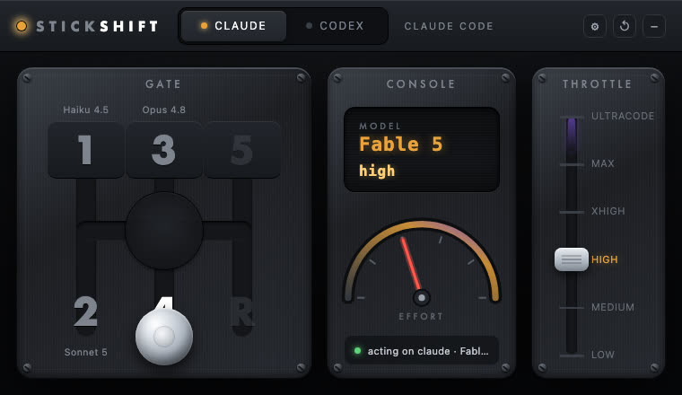
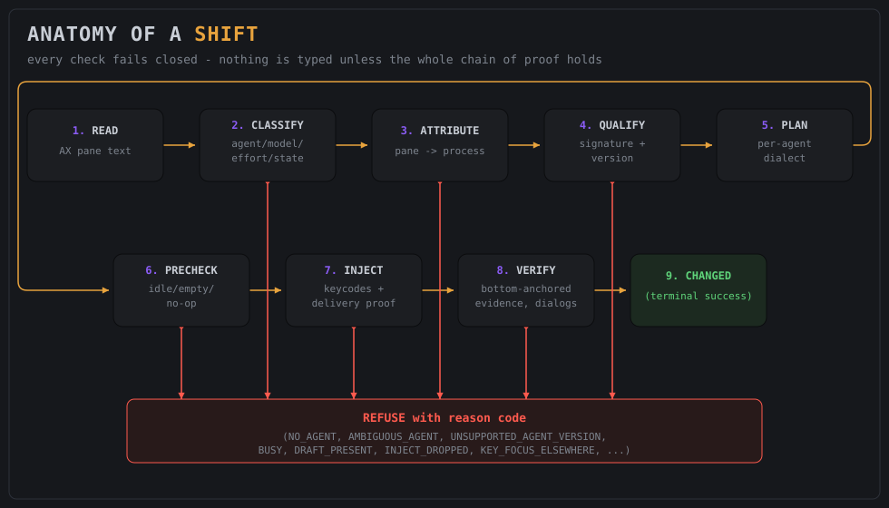
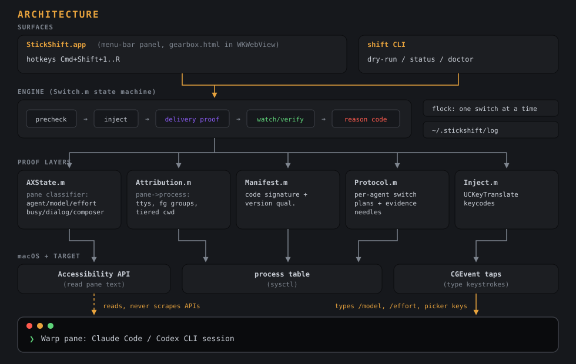

Painel de Modelo e Esforço
Model & Effort Panel Panel de Modelo y Esfuerzo
StickShift é um painel de menu-bar em macOS com um H-pattern de câmbio de verdade: puxe o manche pra trocar o modelo do Claude Code ou Codex na pane de terminal que você está olhando, arraste o acelerador pra trocar o effort. Tudo é provado antes de agir — ou recusa com um motivo, nunca digita às cegas.

Nada de editar config na mão ou decorar comando: StickShift lê a pane pela Accessibility API do
macOS, prova que é um agente local idle e digita exatamente o que você digitaria — /model,
/effort, ou as teclas do picker do Codex.
Nunca edita arquivo de config, nunca chama API de provider, nunca usa automação de terminal. Só digita depois de provar pane idle, processo local certo e binário assinado e qualificado — qualquer prova que falhar vira recusa com código de motivo.
Face Claude (throttle até ULTRACODE) e face Codex (throttle até ULTRA), com os labels exatos de cada provider e atalhos globais (Cmd+Shift+1..5, Cmd+Shift+R) que disparam a marcha sem nem abrir o painel.
bin/shift faz dry-run por padrão (não digita nada);
--commit executa de fato. shift doctor diagnostica permissão, config e atribuição
da pane focada num comando só.
Entre puxar a marcha e o toast CHANGED, o motor passa por uma cadeia de provas — qualquer elo que falhar interrompe a troca e devolve um código de motivo em vez de um keystroke.
A pane focada é lida via Accessibility API; um classificador puro extrai agente, modelo, effort, cwd, e se está idle/busy/com diálogo aberto, com composer provadamente vazio.
A pane é ligada a um processo local (tty → foreground group → cwd), e o binário atribuído tem assinatura, team e versão checados contra o manifesto.
Digita com keycodes resolvidos pelo layout atual, prova a entrega por delta de ocorrência antes de qualquer Enter, e só reporta sucesso com verdicto ancorado no fim da pane.
O caminho automático (setup.sh) cobre quase tudo; isso aqui é o que precisa existir
na máquina antes.
Precisa do clang pra compilar.
# instala as command line tools se faltar
xcode-select --installWarp é o default verificado ponta a ponta. Terminal.app já passou nos dois testes mais difíceis; outros terminais se qualificam em 4 passos.
# qualifica um terminal novo
./scripts/qualify-terminal.sh "iTerm"StickShift pede a permissão sozinho no primeiro lançamento — é só conceder em System Settings quando o diálogo aparecer.
# confirma o que está concedido
./bin/shift doctorO script é idempotente: roda de novo sem medo se algo falhar no meio.
Verifica pré-requisitos, cria a identidade de assinatura estável, builda, roda a suíte de testes inteira,
instala em ~/Applications/StickShift.app e já abre o app.
git clone https://github.com/inematds/stickshift && cd stickshift # baixa o repo ./scripts/setup.sh # idempotente, instala tudo
Habilite o StickShift em System Settings → Privacy & Security → Accessibility. Depois saia e abra o app de novo (clique direito no gear do menu-bar → Quit → reabra) — a permissão só gruda no processo depois do relaunch, esse é o erro de suporte nº 1.
Clique no pane do terminal rodando o agente, arraste o manche até um gate (ou dispare pela CLI a partir de
outro pane — a CLI recusa a própria pane como SELF_TARGET).
./bin/shift 4 # dry run: mostra o plano, não digita nada ./bin/shift 4 --commit # executa de verdade
CHANGED quer dizer que deu certo; qualquer outro código é uma recusa explicada — cada
tentativa fica registrada com motivo, nunca com o conteúdo da pane.
tail -5 ~/.stickshift/log
Aponte Claude Code, Codex, ou qualquer agente de código pra este repo e diga
"set up StickShift on this Mac". O AGENTS.md do repo é o playbook operacional
completo: instalação, adaptação a terminal e versão de agente, e debug de recusa por código de motivo.
A versão publicada conhecia só Opus 4.8, Fable 5 e a família gpt-5.x. No branch
catalogo-modelos, os modelos viram dados:
um catálogo único diz quais modelos existem, como cada um aparece na tela e quais esforços aceita. As marchas
padrão já vêm com o Opus 5.5 e a família GPT-6.
O código foi escrito num servidor Linux, sem o compilador da Apple. Os nomes dos modelos vieram dos
programas instalados (Claude Code 2.1.282 e Codex 0.156.1) e foram conferidos na tela real
via tmux no Linux, que é a mesma interface do macOS. Nessa conferência apareceram duas mudanças do Codex, já
corrigidas no branch: o rodapé mostra "GPT-6-Astra" com maiúsculas, e Max/Ultra agora ficam num submenu
"More reasoning…". Pontos para checar no Mac: a lista de textos-fantasma do campo do Codex ainda é da
versão 0.144.1 (se recusar com DRAFT_PRESENT, basta reextrair) e o modelo do Claude é lido de
uma linha de status 📂 pasta · Modelo, que parece vir de um statusline personalizado. Antes de usar, num Mac: git checkout catalogo-modelos,
make test, make matrix, stickshift doctor e stickshift status
num painel com cada agente. Só depois disso o branch entra no main.
| Marcha | Claude Code | Codex |
|---|---|---|
| 1 | Haiku 4.5 | gpt-6-luna · medium |
| 2 | Sonnet 5 | gpt-6-sol · medium |
| 3 | Opus 5.5 · medium | gpt-6-astra · medium |
| 4 | Opus 5.5 · high | gpt-6-astra · high |
| 5 | Opus 5.5 · xhigh | gpt-6-astra · xhigh |
| R | Opus 5.5 · low | gpt-6-sol · low |
| ULTRA | Opus 5.5 · ultracode | gpt-6-astra · ultra |
A escada segue a referência de esforço: medium como marcha de trabalho, high quando precisar de mais raciocínio e xhigh para o caso difícil. O max fica fora das marchas padrão, mas continua disponível pelo acelerador ou por remapeamento.
No ~/.stickshift/config.toml, uma linha por modelo:
claude_model.opus = "Opus 5.6" codex_model.gpt-7-nova = "low medium high xhigh max" gear.3.claude = "opus medium"
No Claude, a chave é o argumento do /model e o valor é o nome da linha de status. No Codex, a
chave é o nome no seletor e o valor é a lista de esforços que o modelo aceita.
stickshift status num painel com o modelo novo precisa mostrar o mesmo nome. Depois,
stickshift 3 sem --commit imprime o plano sem digitar nada; só então use
--commit.
A comparação de nomes aceita decoração ("Opus 5.5 (1M context)" conta como Opus 5.5), mas nunca confunde versões: "Opus 5" não é "Opus 5.5". No Codex, cada modelo só aceita os próprios esforços; pedir ultra no luna é recusado.
No Linux, e no Windows via WSL, o StickShift v2 pede ao próprio terminal (tmux) para ler a tela e digitar, sem Acessibilidade do macOS nem app nativo. Ele troca modelo e esforço do Claude Code e do Codex pela linha de comando ou por um painel web com o mesmo câmbio, e tem um chat nível 1 que manda prompts para o agente do painel escolhido. Usa só Python 3, sem instalar nada. Validado ao vivo em 24/09/2026 com Claude Code 2.1.282 e Codex 0.156.1.
Clone o repositório e ponha o lançador no PATH. O list mostra os painéis tmux com Claude Code ou Codex e o estado de cada um.
ln -s "$PWD/v2/bin/stickshift2" \ ~/.local/bin/stickshift2 stickshift2 list
Sem --commit, é só simulação e mostra o plano. Com --commit, digita e confirma pela mensagem do próprio agente.
stickshift2 shift 4 --pane %3
stickshift2 shift 4 --pane %3 --commit
stickshift2 keys # atalhos do tmuxAbre em 127.0.0.1 com um token. À esquerda, os terminais; no centro, o câmbio; à direita, o chat com o agente.
stickshift2 web
# abra o endereço com ?t=… impressoO agente é identificado pelo processo que roda no painel, não pelo texto. Só digita com o agente
ocioso e o campo vazio; a sugestão cinza do Claude não conta como rascunho. A troca é confirmada pela mensagem do agente
("Set model to …", "Model changed to …"). O painel web exige token em toda chamada, checa Host e Origin
e registra tudo em ~/.stickshift/v2.log.
Só prompts: mensagens começando com /, ! ou # são recusadas,
assim como quebras de linha. Tarefas no sistema passam pelo agente e pelas permissões dele. Se o agente pedir permissão,
o chat avisa e a decisão fica no terminal; aprovar pelo chat é a v3.
Cada troca também vira o padrão do agente para sessões novas, como digitar /model à mão.
opus e opus[1m] são modelos diferentes (200K e 1M de contexto); as marchas usam opus[1m].
O Windows nativo (backend WezTerm) é a fase 5 do plano e ainda não existe. Por enquanto, no Windows,
use o WSL com tmux. Código e README da v2 → ·
plano →
Direto de docs/: a anatomia de uma troca e o mapa de código-fonte, do jeito que
acompanham o README.


Do jeito que o próprio README documenta hoje.
scripts/qualify-terminal.sh; reduzir a ambiguidade que hoje depende de título de janela + geometria + cwd.catalogo-modelos)Opus 5.5 e GPT-6 nas marchas padrão, modelo novo pelo config.toml; falta compilar e testar num Mac antes do merge.